Cylinder Head Assembly (2GR-FE) Reassembly |
| 1. Install Spark Plug Tube |
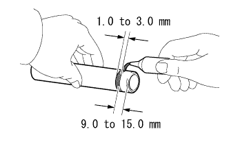 |
Apply adhesive 1324 to the area of the new spark plug tube shown in the illustration.
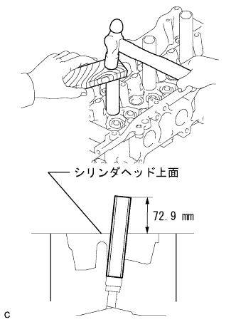 |
Using a wooden block and hammer, tap in the spark plug tube to the position shown in the illustration.
| 2. Install Ring Pin |
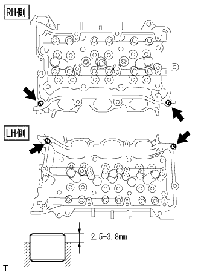 |
Using a plastic-faced hammer, tap in the ring pin to the position shown in the illustration.
| 3. Install Plug NO.1 (w/ Head Straight Screw) |
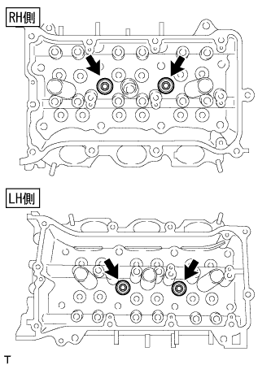 |
Using a 10 socket hexagon wrench, install 4 straight screw plugs No.1 with 4 new water hole gaskets.
| 4. Install Plug NO.2 (w/ Head Straight Screw) |
 |
Using a 14 straight hexagon wrench, install the 2 straight screw plugs No.2 with 2 new screw plug gaskets.
| 5. Install Stud Bolt |
Using E6 and E8 torx socket wrenches, install the stud bolts at the positions shown in the illustration.
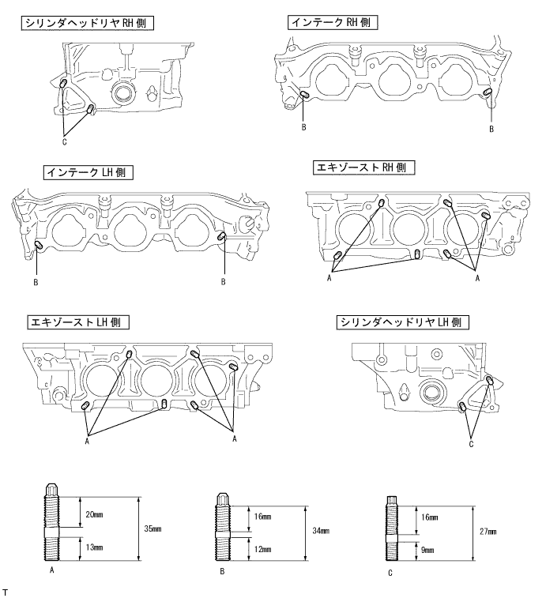
| 6. Install Straight Pin |
Using a plastic-faced hammer, tap the straight pins into the cylinder head to the position shown in the illustration.
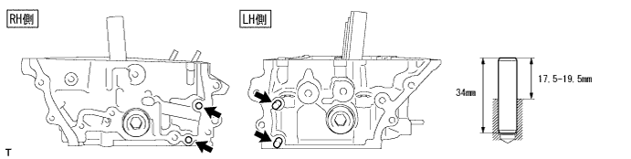
| 7. Install Valve Spring Seat |
Install the valve spring seats to the cylinder head.
| 8. Install Intake Valve Stem Oil Seal |
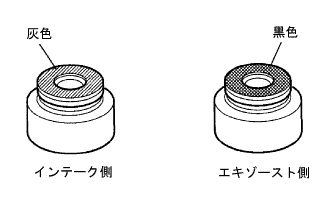 |
Apply a light coat of engine oil to the lip of a new intake valve stem oil seal.
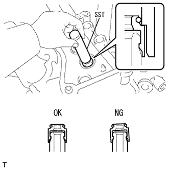 |
Using SST, push in the intake valve stem oil seal onto the valve guide bush by hand as far as it will go.
| 9. Install Exhaust Valve Stem Oil Seal |
| 10. Install Exhaust Valve |
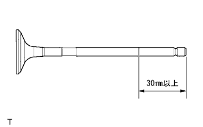 |
Apply sufficient engine oil to the locations shown in the illustration.
Place the exhaust valve, inner compression spring and valve spring retainer on the cylinder head.
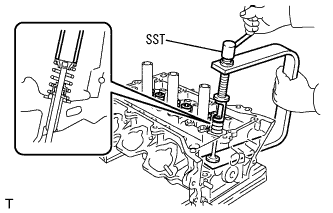 |
Using SST, install the valve spring retainer locks.
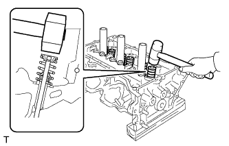 |
Using a plastic-faced hammer, lightly tap the valve stem tip to seat the compression spring.
| 11. Install Intake Valve |
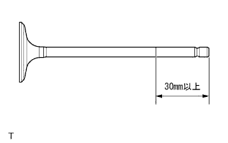 |
Apply sufficient engine oil to the locations shown in the illustration.
Place the intake valve, inner compression spring and valve spring retainer on the cylinder head.
 |
Using SST, install the valve spring retainer locks.
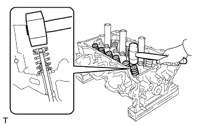 |
Using a plastic-faced hammer, lightly tap the valve stem tip to seat the compression spring.
| 12. Install Valve Stem Cap |
Apply engine oil to the valve stem tips and install the 24 valve stem caps.